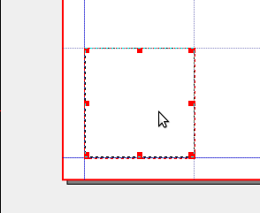
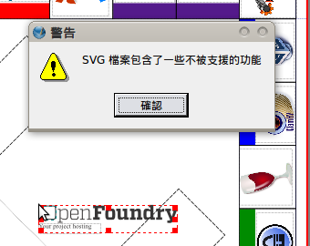

也紀念我們永遠的朋友 李士傑先生（Shih-Chieh Ilya Li）。
用自由軟體 Scribus 來輸出文件（2）-製作大富翁棋盤
本年度的 10/23 為中研院一年一度的 Open House 開放參觀日，筆者亦於是日協助推廣 Open Source 方面的使用知識，並為此著手製作大富翁遊戲測驗為參觀民眾說明。於是本期電子報的「用自由軟體 Scribus 來輸出文件（2）」，推出特別篇，以大富翁棋盤的製作為範例，教導大家如何用 Scribus 編輯框格形狀，以及利用旋轉、鎖住、群組、參考線、圖層等功能來編排更為出色的框格海報。
新建檔案
大富翁棋盤的尺寸為 20 英寸乘以 20 英寸的正方形。選擇【目錄】的【新建】，在【新建】檔案對話視窗中，依照下列步驟操作：
1. 尺寸選擇自定。
2. 預設單位選擇英寸 (in)。
3. 頁面大小的寬度選擇 20，高度選擇 20。
4. 頁面邊緣參考線左右上下都選擇 0.5 in。（圖 1）
▲圖 1
選擇背景
我們要將正方形版面新增有顏色的背景，透過〔插入形狀〕達成。（圖 2）
▲圖 2
**除了長方形形狀外，按下〔插入形狀〕按鈕的下拉選單還可以新增其他形狀。（圖 3）
▲圖 3
把形狀大小拖放到符合整個頁面大小，接著按右鍵點選【屬性】，在最下面的【顏色】選項，選擇填滿的顏色為 Aquamarine2，透明度 Shade 40% 。（圖 4）
**注意，要選擇填滿色彩而不是線條色彩。
▲圖 4
**如果覺得用滑鼠拖不出想要的大小，可以嘗試利用屬性視窗中的第一項功能【X, Y, Z】，直接輸入想要的寬度及高度數值（圖 5）。另外在【屬性】對話視窗中也可以調整新增形狀如何對齊，輸入形狀在頁面上的 X-座標及 Y-座標，以及維持圖形的寬高比。
▲圖 5
使用參考線
前面新增檔案時邊緣留了 0.5 英寸的空間，而大富翁每格高 2.5 英寸。為了接下來操作的便利，我們在這邊先介紹參考線的使用。
**請先把背景圖層改為隱形（在【視窗】的【圖層】中的〔眼睛〕打勾取消），不然會看不到之後新增的參考線。
選擇【頁面】的【管理參考線】。（圖 6）
▲圖 6
我們要新增水平參考線以及垂直參考線各四條，座標分別為 0.5 in、19.5 in、3.0 in、17.0 in。
1. 在水平參考線這部分先按〔增加〕。
2. 選擇參考線的位置，輸入 0.5 in 這條，然後在白色框格內任意處按一下。接續增加 19.5 in、3.0 in、17.0 in 這 3 條參考線。
**一般軟體的習慣是數值設定好在新增，但在 Scribus 中是反過來的，要先增再設定數值。
3. 垂直參考線的新增，可按照步驟 1. 2. 方法新增。
4. 按〔確定〕。（圖 7）
▲圖 7
**可以在右邊的預覽視窗中，看到新增的參考線在頁面上的相對位置。
新增完後可以看到頁面上的參考線，總共八條。（圖 8）
▲圖 8
製作大富翁的格子
我們在這邊要用插入表格及文字方塊的方式製作大富翁的格子。除了插入表格及文字方塊外，還會用到【群組】及【鎖定】功能。
1. 先新增圖層，按【視窗】->【圖層】，跳出圖層對話視窗。
2. 在新增的圖層名稱上點兩下，將新的圖層命名為「格子」。（詳細圖層說明後面還會做介紹。）（圖 9）
▲圖 9
大富翁四個角的格子，大小為 2.5 英寸乘以 2.5 英寸方塊，所以我們可以按〔插入文字框〕按鈕 ，新增一個 2.5 英寸乘以 2.5 英寸大小的文字方塊。（圖 10）
▲圖 10
**假如拖曳不出想要的大小，可以參考前面的敘述，直接在〔屬性〕對話視窗，填入適當的數值制定想要的大小。
參考線的用意就是可以在排版的時候方便精準的讓頁面上的物件對齊頁面上的某一條線，讓頁面看起來更整齊美觀。現在要讓參考線發揮作用了，選擇【頁面】->【吸附到參考線】。（圖 11）
▲圖 11
現在就可以讓文字方塊輕易對齊參考線，而不是純粹拿來「參考」用。（圖 12）

▲圖 12
接下來要製作棋盤每邊的格子，按下〔新增表格〕按鈕，填入行列數分別為為 1 行 5 列。（圖 13）
▲圖 13
在正方形下方的邊拉出要規劃的範圍（此處仍可利用【屬性】調整邊框大小）。
新增好表格後，按住 Shift 鍵選擇角落的文字方塊與剛剛新增的表格，在選取好後，選擇【物件】->【群組】，將文字方格與表格群組（圖 14）。
** 按住 Shift 鍵後用滑鼠就可以點選數個物件。
▲圖 14
進入【屬性】對話視窗的【線條】，選擇 2 pt 寬的實心線條，線條顏色選黑色。（圖 15）
▲圖 15
將群組好的文字方格與表格移到先前設的 17.0 in 水平參考線位置，快移到參考線時有沒有被吸到？我們可以透過參考線讓頁面上的物件排好，像是對齊某條線。是不是見識到參考線的威力了呢？
**也許會覺得奇怪，怎麼有些格子的框線沒有顯示，別擔心，等到解除群組所有的方格就會出現框線了。
**也可以透過新增形狀方式製作格子，但要調整較多選項，製作較麻煩。
{kind=link}
物件的複製與旋轉
做完一邊框格以後，想必大家都知道只要做了一邊其他三邊以複製方式製作一模一樣的邊框格，之後用旋轉的方式完成，因此接下來要介紹旋轉的功能。
複製完成後，複製的物件是在原來的邊框格上，只要把複製出來的表格移到想要的位子即可。（圖 16）
▲圖 16
從【視窗】開啟【屬性】的【X, Y, Z】。前面介紹過座標和大小的調整，在同一個地方有座標旋轉的功能。將剛剛複製好的表格，旋轉 90 度、180 度、270 度，這樣四邊的框格就完成了。（圖 17）
▲圖 17
除了調角度外，你還可以選擇旋轉的基準點。（圖 18）
▲圖 18
利用前面的方法，將剩下 2 邊完成。（圖 19）
▲圖 19
新增色塊
在其中一邊新增色塊，選擇〔插入形狀〕，寬度要兩格寬，高度選 0.7 in。（圖 20）
▲圖 20
新增另一塊色塊。（圖 21）
▲圖 21
利用前面的方法，複製另外三邊的色塊。色塊的顏色，一樣在【屬性】->【顏色】做調整，就不在此贅述。（圖 22）
▲圖 22
現在色塊蓋過格子的黑色框線，所以我們要調整色塊與方格的上下相對位置。一樣在屬性對話視窗【X, Y, Z】中，選擇調整圖層，將色塊往下移動，直到黑色框線出現。（圖 23）
▲圖 23
這樣黑色框線就出現了。（圖 24）
▲圖 24
新增機會命運方格、圖片
利用前面學到的新增文字框、旋轉、屬性視窗，相信大家應該已經知道如何操作。這邊要特別注意，新增機會命運的方格時，【屬性】對話視窗【線條】選項，線條要選擇虛線。（圖 25）
▲圖 25
前一篇 Scribus 教學文有提到如何新增圖片，在這邊要利用前面學到的新增圖層功能，將新增的圖片加在新圖層上，在這邊就不累述。（圖 26）
▲圖 26
接下來要把大富翁中的老爺爺 (Rich Uncle Pennybags) 加上來。（圖 27）
▲圖 27
在這裡要特別注意，由於老爺爺的圖像仍受著作權保護，所以使用上需要標明圖片來源，並註記公眾教育上的合理使用。（圖 28）
▲圖 28
匯入 SVG 檔案
若圖片檔為向量圖檔，例如 OpenFoundry Logo 的 Logo，此時就要從【檔案】->【匯入】->【匯入 SVG】，將圖片匯入進來。（圖 29）
▲圖 29
選擇要匯入的位置。（圖 30）
▲圖 30
會有錯誤訊息出現，但不影響大富翁棋盤的製作。（圖 31）

▲圖 31
利用前面學到的調整大小、旋轉等功能，把 OpenFoundry 的 Logo 放到頁面上適當的位置。（圖 32）
▲圖 32
**svg 檔在 Scribus 中有很多應用，在這裡只是單純插入後調整大小，進階的功能會在之後的教學文中說明。
大富翁海報製作大功告成！以下就補充在製作海報過程當中很重要的一項功能：「圖層」。
▲圖 33
圖層的應用
有時候製作海報會有用到很多種物件，像是這張海報就用了底色、方框、圖片、文字等等，有了這些小物件才構成一個完整的海報。由於在製作海報過程中需要大量的編排，常常為了調整一個框格不小心移動到底圖，還好復原鍵可以及時修復。
【圖層】視窗中的底部有四個小按鈕可以新建圖層或刪除圖層，同時也可以調整圖層的上下次序，方便大家管理圖層。（圖 34）
▲圖 34
點 2 下直接就可以在上面更改圖層的名字，方便你做物件的分類管理，像是製作大富翁海報時就分成了 3 個圖層。（圖 35）
▲圖 35
在圖層視窗的上方也有三個小圖示，小歸小但是它卻是個十分人性化的功能，最左邊那個有眼睛圖示的按鈕代表著想要顯示的圖層，可以任意勾選要顯示或隱藏的圖層。中間列印的小圖示就是當要列印時，可選擇要列印出來的部份。（圖 36）
▲圖 36
而最右邊圖示具有鎖住的功能，你可以勾選將某幾個圖層鎖住。不過你本來就只能移動所在圖層上的物件，因此鎖住這項功能其實只是保險起見，萬一不小心選到你不想動到的圖層時，鎖住的這層物件也不會跟著移動。（圖 37）
▲圖 37
另外，當你想要變更某個物件所在的圖層時，只要在該物件上按右鍵【傳送到圖層】，再選擇你要的圖層，這樣就可以了。（圖 38）
▲圖 38
這張海報只利用了幾個簡單的基本元素：表格、圖片以及顏色框，在藉由旋轉、鎖住、群組、參考線、圖層這些功能的輔助下，也能編排出精細的框格海報，因此不要小看 Scribus 的一些小功能，在你編排檔案時善用這些功能，它們都將助你一臂之力。
您也許有興趣閱讀以下文章:
- 用自由軟體 Scribus 來輸出文件（5）- 文字應用 - 2011-02-21
- 用自由軟體 Scribus 來輸出文件（4）- 製作模板並轉為 PDF 輸出 - 2011-01-05
- 用自由軟體 Scribus 來輸出文件（3）-製作活動海報及手冊 - 2010-12-13
- 用自由軟體 Scribus 來輸出文件（1）-基本操作 - 2010-10-11
專欄總覽


E-Mail：contact@openfoundry.org Address：台北市南港區研究院路2段128號 中央研究院資訊科學研究所 . 隱私權條款. 使用條款